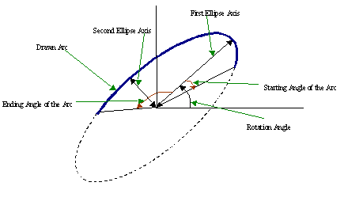
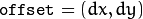

Drawing Functions
Drawing functions work with matrices/images of arbitrary depth.
The boundaries of the shapes can be rendered with antialiasing (implemented only for 8-bit images for now).
All the functions include the parameter color that uses an RGB value (that may be constructed
with the Scalar constructor
) for color
images and brightness for grayscale images. For color images, the channel ordering
is normally Blue, Green, Red.
This is what imshow(), imread(), and imwrite() expect.
So, if you form a color using the
Scalar constructor, it should look like:
If you are using your own image rendering and I/O functions, you can use any channel ordering. The drawing functions process each channel independently and do not depend on the channel order or even on the used color space. The whole image can be converted from BGR to RGB or to a different color space using
cvtColor() .
If a drawn figure is partially or completely outside the image, the drawing functions clip it. Also, many drawing functions can handle pixel coordinates specified with sub-pixel accuracy. This means that the coordinates can be passed as fixed-point numbers encoded as integers. The number of fractional bits is specified by the shift parameter and the real point coordinates are calculated as
. This feature is especially effective when rendering antialiased shapes.
Note
The functions do not support alpha-transparency when the target image is 4-channel. In this case, the color[3] is simply copied to the repainted pixels. Thus, if you want to paint semi-transparent shapes, you can paint them in a separate buffer and then blend it with the main image.
Note
- An example on using variate drawing functions like line, rectangle, ... can be found at opencv_source_code/samples/cpp/drawing.cpp
circle
Draws a circle.
-
C++: void circle(InputOutputArray img, Point center, int radius, const Scalar& color, int thickness=1, int lineType=LINE_8, int shift=0 )
-
Python: cv2.circle(img, center, radius, color[, thickness[, lineType[, shift]]]) → img
-
C: void cvCircle(CvArr* img, CvPoint center, int radius, CvScalar color, int thickness=1, int line_type=8, int shift=0 )
| Parameters: |
- img – Image where the circle is drawn.
- center – Center of the circle.
- radius – Radius of the circle.
- color – Circle color.
- thickness – Thickness of the circle outline, if positive. Negative thickness means that a filled circle is to be drawn.
- lineType – Type of the circle boundary. See the line() description.
- shift – Number of fractional bits in the coordinates of the center and in the radius value.
|
|---|
The function circle draws a simple or filled circle with a given center and radius.
clipLine
Clips the line against the image rectangle.
-
C++: bool clipLine(Size imgSize, Point& pt1, Point& pt2)
-
C++: bool clipLine(Rect imgRect, Point& pt1, Point& pt2)
-
Python: cv2.clipLine(imgRect, pt1, pt2) → retval, pt1, pt2
-
C: int cvClipLine(CvSize img_size, CvPoint* pt1, CvPoint* pt2)
| Parameters: |
- imgSize – Image size. The image rectangle is Rect(0, 0, imgSize.width, imgSize.height) .
- imgRect – Image rectangle.
- pt1 – First line point.
- pt2 – Second line point.
|
|---|
The functions clipLine calculate a part of the line segment that is entirely within the specified rectangle.
They return false if the line segment is completely outside the rectangle. Otherwise, they return true .
ellipse
Draws a simple or thick elliptic arc or fills an ellipse sector.
-
C++: void ellipse(InputOutputArray img, Point center, Size axes, double angle, double startAngle, double endAngle, const Scalar& color, int thickness=1, int lineType=LINE_8, int shift=0 )
-
C++: void ellipse(InputOutputArray img, const RotatedRect& box, const Scalar& color, int thickness=1, int lineType=LINE_8 )
-
Python: cv2.ellipse(img, center, axes, angle, startAngle, endAngle, color[, thickness[, lineType[, shift]]]) → img
-
Python: cv2.ellipse(img, box, color[, thickness[, lineType]]) → img
-
C: void cvEllipse(CvArr* img, CvPoint center, CvSize axes, double angle, double start_angle, double end_angle, CvScalar color, int thickness=1, int line_type=8, int shift=0 )
-
C: void cvEllipseBox(CvArr* img, CvBox2D box, CvScalar color, int thickness=1, int line_type=8, int shift=0 )
| Parameters: |
- img – Image.
- center – Center of the ellipse.
- axes – Half of the size of the ellipse main axes.
- angle – Ellipse rotation angle in degrees.
- startAngle – Starting angle of the elliptic arc in degrees.
- endAngle – Ending angle of the elliptic arc in degrees.
- box – Alternative ellipse representation via RotatedRect or CvBox2D. This means that the function draws an ellipse inscribed in the rotated rectangle.
- color – Ellipse color.
- thickness – Thickness of the ellipse arc outline, if positive. Otherwise, this indicates that a filled ellipse sector is to be drawn.
- lineType – Type of the ellipse boundary. See the line() description.
- shift – Number of fractional bits in the coordinates of the center and values of axes.
|
|---|
The functions ellipse with less parameters draw an ellipse outline, a filled ellipse, an elliptic arc, or a filled ellipse sector.
A piecewise-linear curve is used to approximate the elliptic arc boundary. If you need more control of the ellipse rendering, you can retrieve the curve using
ellipse2Poly() and then render it with
polylines() or fill it with
fillPoly() . If you use the first variant of the function and want to draw the whole ellipse, not an arc, pass startAngle=0 and endAngle=360 . The figure below explains the meaning of the parameters.
Figure 1. Parameters of Elliptic Arc

ellipse2Poly
Approximates an elliptic arc with a polyline.
-
C++: void ellipse2Poly(Point center, Size axes, int angle, int arcStart, int arcEnd, int delta, vector<Point>& pts)
-
Python: cv2.ellipse2Poly(center, axes, angle, arcStart, arcEnd, delta) → pts
| Parameters: |
- center – Center of the arc.
- axes – Half of the size of the ellipse main axes. See the ellipse() for details.
- angle – Rotation angle of the ellipse in degrees. See the ellipse() for details.
- arcStart – Starting angle of the elliptic arc in degrees.
- arcEnd – Ending angle of the elliptic arc in degrees.
- delta – Angle between the subsequent polyline vertices. It defines the approximation accuracy.
- pts – Output vector of polyline vertices.
|
|---|
The function ellipse2Poly computes the vertices of a polyline that approximates the specified elliptic arc. It is used by
ellipse() .
fillConvexPoly
Fills a convex polygon.
-
C++: void fillConvexPoly(Mat& img, const Point* pts, int npts, const Scalar& color, int lineType=LINE_8, int shift=0 )
-
C++: void fillConvexPoly(InputOutputArray img, InputArray points, const Scalar& color, int lineType=LINE_8, int shift=0 )
-
Python: cv2.fillConvexPoly(img, points, color[, lineType[, shift]]) → img
-
C: void cvFillConvexPoly(CvArr* img, const CvPoint* pts, int npts, CvScalar color, int line_type=8, int shift=0 )
| Parameters: |
- img – Image.
- pts – Polygon vertices.
- npts – Number of polygon vertices.
- color – Polygon color.
- lineType – Type of the polygon boundaries. See the line() description.
- shift – Number of fractional bits in the vertex coordinates.
|
|---|
The function fillConvexPoly draws a filled convex polygon.
This function is much faster than the function fillPoly . It can fill not only convex polygons but any monotonic polygon without self-intersections,
that is, a polygon whose contour intersects every horizontal line (scan line) twice at the most (though, its top-most and/or the bottom edge could be horizontal).
fillPoly
Fills the area bounded by one or more polygons.
-
C++: void fillPoly(Mat& img, const Point** pts, const int* npts, int ncontours, const Scalar& color, int lineType=LINE_8, int shift=0, Point offset=Point() )
-
C++: void fillPoly(InputOutputArray img, InputArrayOfArrays pts, const Scalar& color, int lineType=LINE_8, int shift=0, Point offset=Point() )
-
Python: cv2.fillPoly(img, pts, color[, lineType[, shift[, offset]]]) → img
-
C: void cvFillPoly(CvArr* img, CvPoint** pts, const int* npts, int contours, CvScalar color, int line_type=8, int shift=0 )
| Parameters: |
- img – Image.
- pts – Array of polygons where each polygon is represented as an array of points.
- npts – Array of polygon vertex counters.
- ncontours – Number of contours that bind the filled region.
- color – Polygon color.
- lineType – Type of the polygon boundaries. See the line() description.
- shift – Number of fractional bits in the vertex coordinates.
- offset – Optional offset of all points of the contours.
|
|---|
The function fillPoly fills an area bounded by several polygonal contours. The function can fill complex areas, for example,
areas with holes, contours with self-intersections (some of their parts), and so forth.
getTextSize
Calculates the width and height of a text string.
-
C++: Size getTextSize(const String& text, int fontFace, double fontScale, int thickness, int* baseLine)
-
Python: cv2.getTextSize(text, fontFace, fontScale, thickness) → retval, baseLine
-
C: void cvGetTextSize(const char* text_string, const CvFont* font, CvSize* text_size, int* baseline)
| Parameters: |
- text – Input text string.
- text_string – Input text string in C format.
- fontFace – Font to use. See the putText() for details.
- fontScale – Font scale. See the putText() for details.
- thickness – Thickness of lines used to render the text. See putText() for details.
- baseLine – Output parameter - y-coordinate of the baseline relative to the bottom-most text point.
- baseline – Output parameter - y-coordinate of the baseline relative to the bottom-most text point.
- font – Font description in terms of old C API.
- text_size – Output parameter - The size of a box that contains the specified text.
|
|---|
The function getTextSize calculates and returns the size of a box that contains the specified text.
That is, the following code renders some text, the tight box surrounding it, and the baseline:
String text = "Funny text inside the box";
int fontFace = FONT_HERSHEY_SCRIPT_SIMPLEX;
double fontScale = 2;
int thickness = 3;
Mat img(600, 800, CV_8UC3, Scalar::all(0));
int baseline=0;
Size textSize = getTextSize(text, fontFace,
fontScale, thickness, &baseline);
baseline += thickness;
// center the text
Point textOrg((img.cols - textSize.width)/2,
(img.rows + textSize.height)/2);
// draw the box
rectangle(img, textOrg + Point(0, baseline),
textOrg + Point(textSize.width, -textSize.height),
Scalar(0,0,255));
// ... and the baseline first
line(img, textOrg + Point(0, thickness),
textOrg + Point(textSize.width, thickness),
Scalar(0, 0, 255));
// then put the text itself
putText(img, text, textOrg, fontFace, fontScale,
Scalar::all(255), thickness, 8);
InitFont
Initializes font structure (OpenCV 1.x API).
-
C: void cvInitFont(CvFont* font, int font_face, double hscale, double vscale, double shear=0, int thickness=1, int line_type=8 )
| Parameters: |
- font – Pointer to the font structure initialized by the function
- font_face –
Font name identifier. Only a subset of Hershey fonts http://sources.isc.org/utils/misc/hershey-font.txt are supported now:
- CV_FONT_HERSHEY_SIMPLEX normal size sans-serif font
- CV_FONT_HERSHEY_PLAIN small size sans-serif font
- CV_FONT_HERSHEY_DUPLEX normal size sans-serif font (more complex than CV_FONT_HERSHEY_SIMPLEX )
- CV_FONT_HERSHEY_COMPLEX normal size serif font
- CV_FONT_HERSHEY_TRIPLEX normal size serif font (more complex than CV_FONT_HERSHEY_COMPLEX )
- CV_FONT_HERSHEY_COMPLEX_SMALL smaller version of CV_FONT_HERSHEY_COMPLEX
- CV_FONT_HERSHEY_SCRIPT_SIMPLEX hand-writing style font
- CV_FONT_HERSHEY_SCRIPT_COMPLEX more complex variant of CV_FONT_HERSHEY_SCRIPT_SIMPLEX
The parameter can be composited from one of the values above and an optional CV_FONT_ITALIC flag, which indicates italic or oblique font.
- hscale – Horizontal scale. If equal to 1.0f , the characters have the original width depending on the font type. If equal to 0.5f , the characters are of half the original width.
- vscale – Vertical scale. If equal to 1.0f , the characters have the original height depending on the font type. If equal to 0.5f , the characters are of half the original height.
- shear – Approximate tangent of the character slope relative to the vertical line. A zero value means a non-italic font, 1.0f means about a 45 degree slope, etc.
- thickness – Thickness of the text strokes
- line_type – Type of the strokes, see line() description
|
|---|
The function initializes the font structure that can be passed to text rendering functions.
line
Draws a line segment connecting two points.
-
C++: void line(InputOutputArray img, Point pt1, Point pt2, const Scalar& color, int thickness=1, int lineType=LINE_8, int shift=0 )
-
Python: cv2.line(img, pt1, pt2, color[, thickness[, lineType[, shift]]]) → img
-
C: void cvLine(CvArr* img, CvPoint pt1, CvPoint pt2, CvScalar color, int thickness=1, int line_type=8, int shift=0 )
| Parameters: |
- img – Image.
- pt1 – First point of the line segment.
- pt2 – Second point of the line segment.
- color – Line color.
- thickness – Line thickness.
- lineType –
Type of the line:
- LINE_8 (or omitted) - 8-connected line.
- LINE_4 - 4-connected line.
- LINE_AA - antialiased line.
- shift – Number of fractional bits in the point coordinates.
|
|---|
The function line draws the line segment between pt1 and pt2 points in the image. The line is clipped by the image boundaries. For non-antialiased lines with integer coordinates, the 8-connected or 4-connected Bresenham algorithm is used. Thick lines are drawn with rounding endings.
Antialiased lines are drawn using Gaussian filtering.
arrowedLine
Draws a arrow segment pointing from the first point to the second one.
-
C++: void arrowedLine(InputOutputArray img, Point pt1, Point pt2, const Scalar& color, int thickness=1, int lineType=8, int shift=0, double tipLength=0.1)
| Parameters: |
- img – Image.
- pt1 – The point the arrow starts from.
- pt2 – The point the arrow points to.
- color – Line color.
- thickness – Line thickness.
- lineType –
Type of the line:
- 8 (or omitted) - 8-connected line.
- 4 - 4-connected line.
- CV_AA - antialiased line.
- shift – Number of fractional bits in the point coordinates.
- tipLength – The length of the arrow tip in relation to the arrow length
|
|---|
The function arrowedLine draws an arrow between pt1 and pt2 points in the image. See also line().
LineIterator
-
class LineIterator
Class for iterating pixels on a raster line.
class LineIterator
{
public:
// creates iterators for the line connecting pt1 and pt2
// the line will be clipped on the image boundaries
// the line is 8-connected or 4-connected
// If leftToRight=true, then the iteration is always done
// from the left-most point to the right most,
// not to depend on the ordering of pt1 and pt2 parameters
LineIterator(const Mat& img, Point pt1, Point pt2,
int connectivity=8, bool leftToRight=false);
// returns pointer to the current line pixel
uchar* operator *();
// move the iterator to the next pixel
LineIterator& operator ++();
LineIterator operator ++(int);
Point pos() const;
// internal state of the iterator
uchar* ptr;
int err, count;
int minusDelta, plusDelta;
int minusStep, plusStep;
};
The class LineIterator is used to get each pixel of a raster line. It can be treated as versatile implementation of the Bresenham algorithm where you can stop at each pixel and do some extra processing, for example, grab pixel values along the line or draw a line with an effect (for example, with XOR operation).
The number of pixels along the line is stored in LineIterator::count . The method LineIterator::pos returns the current position in the image
// grabs pixels along the line (pt1, pt2)
// from 8-bit 3-channel image to the buffer
LineIterator it(img, pt1, pt2, 8);
LineIterator it2 = it;
vector<Vec3b> buf(it.count);
for(int i = 0; i < it.count; i++, ++it)
buf[i] = *(const Vec3b)*it;
// alternative way of iterating through the line
for(int i = 0; i < it2.count; i++, ++it2)
{
Vec3b val = img.at<Vec3b>(it2.pos());
CV_Assert(buf[i] == val);
}
rectangle
Draws a simple, thick, or filled up-right rectangle.
-
C++: void rectangle(InputOutputArray img, Point pt1, Point pt2, const Scalar& color, int thickness=1, int lineType=LINE_8, int shift=0 )
-
C++: void rectangle(Mat& img, Rect rec, const Scalar& color, int thickness=1, int lineType=LINE_8, int shift=0 )
-
Python: cv2.rectangle(img, pt1, pt2, color[, thickness[, lineType[, shift]]]) → img
-
C: void cvRectangle(CvArr* img, CvPoint pt1, CvPoint pt2, CvScalar color, int thickness=1, int line_type=8, int shift=0 )
| Parameters: |
- img – Image.
- pt1 – Vertex of the rectangle.
- pt2 – Vertex of the rectangle opposite to pt1 .
- rec – Alternative specification of the drawn rectangle.
- color – Rectangle color or brightness (grayscale image).
- thickness – Thickness of lines that make up the rectangle. Negative values, like CV_FILLED , mean that the function has to draw a filled rectangle.
- lineType – Type of the line. See the line() description.
- shift – Number of fractional bits in the point coordinates.
|
|---|
The function rectangle draws a rectangle outline or a filled rectangle whose two opposite corners are pt1 and pt2, or r.tl() and r.br()-Point(1,1).
polylines
Draws several polygonal curves.
-
C++: void polylines(Mat& img, const Point* const* pts, const int* npts, int ncontours, bool isClosed, const Scalar& color, int thickness=1, int lineType=LINE_8, int shift=0 )
-
C++: void polylines(InputOutputArray img, InputArrayOfArrays pts, bool isClosed, const Scalar& color, int thickness=1, int lineType=LINE_8, int shift=0 )
-
Python: cv2.polylines(img, pts, isClosed, color[, thickness[, lineType[, shift]]]) → img
-
C: void cvPolyLine(CvArr* img, CvPoint** pts, const int* npts, int contours, int is_closed, CvScalar color, int thickness=1, int line_type=8, int shift=0 )
| Parameters: |
- img – Image.
- pts – Array of polygonal curves.
- npts – Array of polygon vertex counters.
- ncontours – Number of curves.
- isClosed – Flag indicating whether the drawn polylines are closed or not. If they are closed, the function draws a line from the last vertex of each curve to its first vertex.
- color – Polyline color.
- thickness – Thickness of the polyline edges.
- lineType – Type of the line segments. See the line() description.
- shift – Number of fractional bits in the vertex coordinates.
|
|---|
The function polylines draws one or more polygonal curves.
drawContours
Draws contours outlines or filled contours.
-
C++: void drawContours(InputOutputArray image, InputArrayOfArrays contours, int contourIdx, const Scalar& color, int thickness=1, int lineType=LINE_8, InputArray hierarchy=noArray(), int maxLevel=INT_MAX, Point offset=Point() )
-
Python: cv2.drawContours(image, contours, contourIdx, color[, thickness[, lineType[, hierarchy[, maxLevel[, offset]]]]]) → image
-
C: void cvDrawContours(CvArr* img, CvSeq* contour, CvScalar external_color, CvScalar hole_color, int max_level, int thickness=1, int line_type=8, CvPoint offset=cvPoint(0,0) )
| Parameters: |
- image – Destination image.
- contours – All the input contours. Each contour is stored as a point vector.
- contourIdx – Parameter indicating a contour to draw. If it is negative, all the contours are drawn.
- color – Color of the contours.
- thickness – Thickness of lines the contours are drawn with. If it is negative (for example, thickness=CV_FILLED ), the contour interiors are
drawn.
- lineType – Line connectivity. See line() for details.
- hierarchy – Optional information about hierarchy. It is only needed if you want to draw only some of the contours (see maxLevel ).
- maxLevel – Maximal level for drawn contours. If it is 0, only
the specified contour is drawn. If it is 1, the function draws the contour(s) and all the nested contours. If it is 2, the function draws the contours, all the nested contours, all the nested-to-nested contours, and so on. This parameter is only taken into account when there is hierarchy available.
- offset – Optional contour shift parameter. Shift all the drawn contours by the specified  .
- contour – Pointer to the first contour.
- external_color – Color of external contours.
- hole_color – Color of internal contours (holes).
|
|---|
The function draws contour outlines in the image if
or fills the area bounded by the contours if
. The example below shows how to retrieve connected components from the binary image and label them:
#include "opencv2/imgproc.hpp"
#include "opencv2/highgui.hpp"
using namespace cv;
using namespace std;
int main( int argc, char** argv )
{
Mat src;
// the first command-line parameter must be a filename of the binary
// (black-n-white) image
if( argc != 2 || !(src=imread(argv[1], 0)).data)
return -1;
Mat dst = Mat::zeros(src.rows, src.cols, CV_8UC3);
src = src > 1;
namedWindow( "Source", 1 );
imshow( "Source", src );
vector<vector<Point> > contours;
vector<Vec4i> hierarchy;
findContours( src, contours, hierarchy,
RETR_CCOMP, CHAIN_APPROX_SIMPLE );
// iterate through all the top-level contours,
// draw each connected component with its own random color
int idx = 0;
for( ; idx >= 0; idx = hierarchy[idx][0] )
{
Scalar color( rand()&255, rand()&255, rand()&255 );
drawContours( dst, contours, idx, color, FILLED, 8, hierarchy );
}
namedWindow( "Components", 1 );
imshow( "Components", dst );
waitKey(0);
}
Note
- An example using the drawContour functionality can be found at opencv_source_code/samples/cpp/contours2.cpp
- An example using drawContours to clean up a background segmentation result at opencv_source_code/samples/cpp/segment_objects.cpp
- (Python) An example using the drawContour functionality can be found at opencv_source/samples/python2/contours.py
putText
Draws a text string.
-
C++: void putText(InputOutputArray img, const String& text, Point org, int fontFace, double fontScale, Scalar color, int thickness=1, int lineType=LINE_8, bool bottomLeftOrigin=false )
-
Python: cv2.putText(img, text, org, fontFace, fontScale, color[, thickness[, lineType[, bottomLeftOrigin]]]) → None
-
C: void cvPutText(CvArr* img, const char* text, CvPoint org, const CvFont* font, CvScalar color)
| Parameters: |
- img – Image.
- text – Text string to be drawn.
- org – Bottom-left corner of the text string in the image.
- font – CvFont structure initialized using InitFont().
- fontFace – Font type. One of FONT_HERSHEY_SIMPLEX, FONT_HERSHEY_PLAIN, FONT_HERSHEY_DUPLEX, FONT_HERSHEY_COMPLEX, FONT_HERSHEY_TRIPLEX, FONT_HERSHEY_COMPLEX_SMALL, FONT_HERSHEY_SCRIPT_SIMPLEX, or FONT_HERSHEY_SCRIPT_COMPLEX,
where each of the font ID’s can be combined with FONT_ITALIC to get the slanted letters.
- fontScale – Font scale factor that is multiplied by the font-specific base size.
- color – Text color.
- thickness – Thickness of the lines used to draw a text.
- lineType – Line type. See the line for details.
- bottomLeftOrigin – When true, the image data origin is at the bottom-left corner. Otherwise, it is at the top-left corner.
|
|---|
The function putText renders the specified text string in the image.
Symbols that cannot be rendered using the specified font are
replaced by question marks. See
getTextSize() for a text rendering code example.